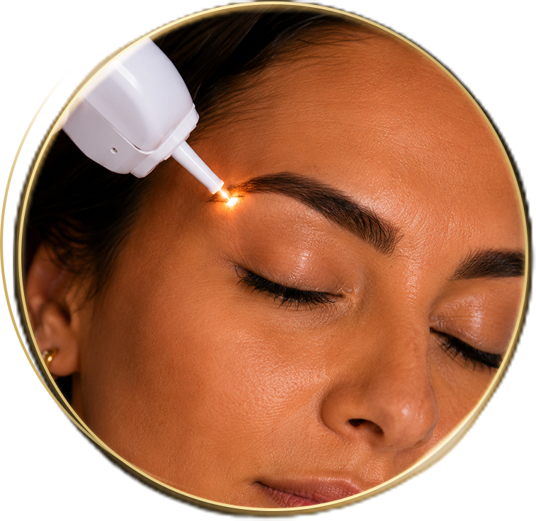
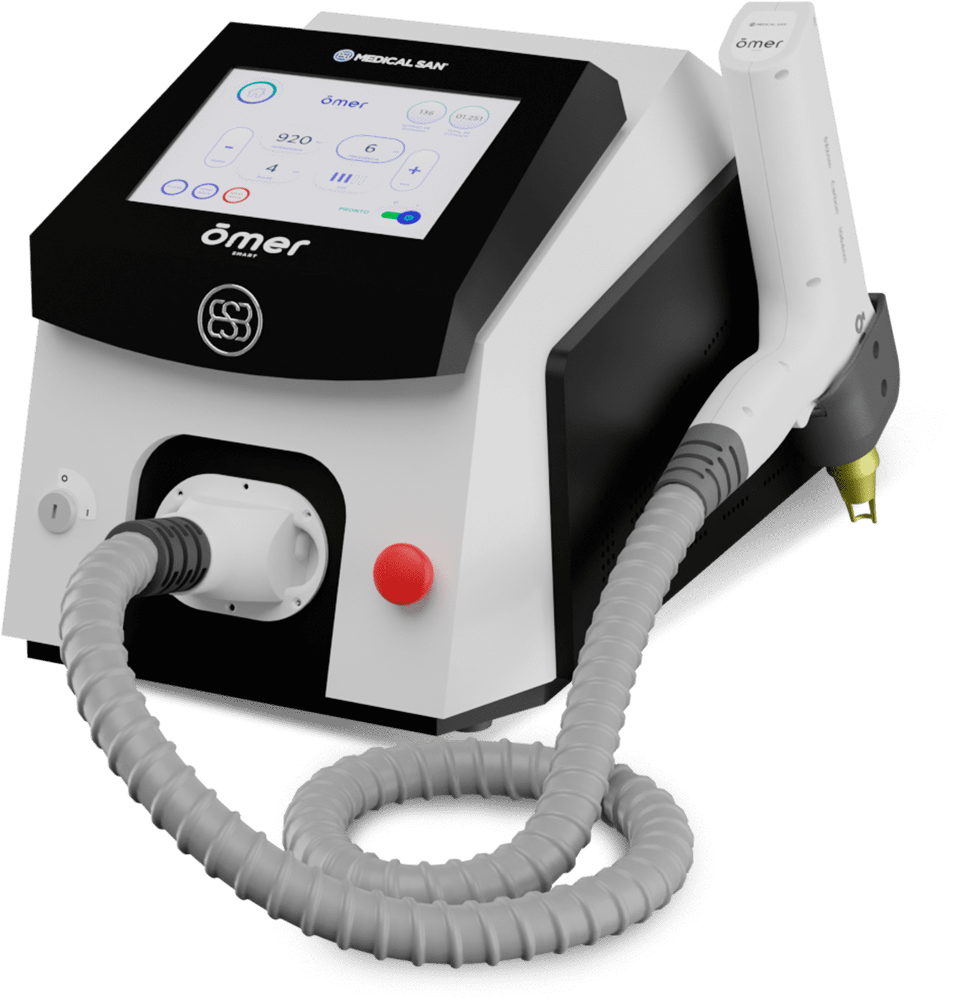

Clareamento progressivo
O tratamento atua gradualmente sobre o pigmento, respeitando a resposta da pele.

Remoção e clareamento a laser
Remoção e clareamento de tatuagens a laser com tecnologia profissional, avaliação individual e acompanhamento real em cada etapa.
Cada pele, pigmento e profundidade responde de uma forma. Por isso, o protocolo é definido somente após avaliação.

Nova fase
É normal olhar para uma tatuagem antiga e sentir que ela já não representa mais quem você é. O clareamento a laser permite iniciar uma nova fase com mais segurança, planejamento e expectativa realista.
Benefícios
O tratamento atua gradualmente sobre o pigmento, respeitando a resposta da pele.
Antes de iniciar, são analisados cor, profundidade, região, tempo da tatuagem e objetivo.
Uso de equipamento voltado para protocolos de remoção e clareamento a laser.
O processo é conduzido etapa por etapa, com orientação profissional.
Tecnologia Ômer
O laser atua na fragmentação dos pigmentos para que o organismo responda gradualmente ao processo. A quantidade de sessões pode variar conforme o tipo de tinta, profundidade, cor, região do corpo e resposta individual da pele.
Entender meu caso pelo WhatsApp
Como funciona
Análise da tatuagem, pele, pigmento, região e objetivo do paciente.
Definição de um protocolo individual com expectativa realista.
Aplicações controladas, respeitando os intervalos e a resposta da pele.
Acompanhamento do clareamento progressivo até o objetivo definido.

Para quem é
Expectativa realista
Algumas tatuagens clareiam mais rápido. Outras exigem mais sessões. O resultado depende da cor do pigmento, profundidade, tempo da tatuagem, região do corpo e resposta individual da pele. Por isso, a avaliação é indispensável.
Dúvidas
Varia conforme o pigmento, profundidade, região, tempo da tatuagem e resposta da pele. A estimativa é feita após avaliação.
A sensibilidade varia de pessoa para pessoa. Durante a avaliação, a profissional orienta sobre cuidados e conforto durante o procedimento.
Em alguns casos é possível alcançar grande clareamento; em outros, o objetivo pode ser preparar para cobertura. Tudo depende da avaliação individual.
Sim. Muitos pacientes procuram o clareamento para facilitar uma nova tatuagem por cima.
Sim. Os cuidados pós-sessão são importantes para a recuperação da pele e para a evolução do tratamento.
Agendamento
Agende sua avaliação e descubra qual protocolo faz sentido para o seu caso.